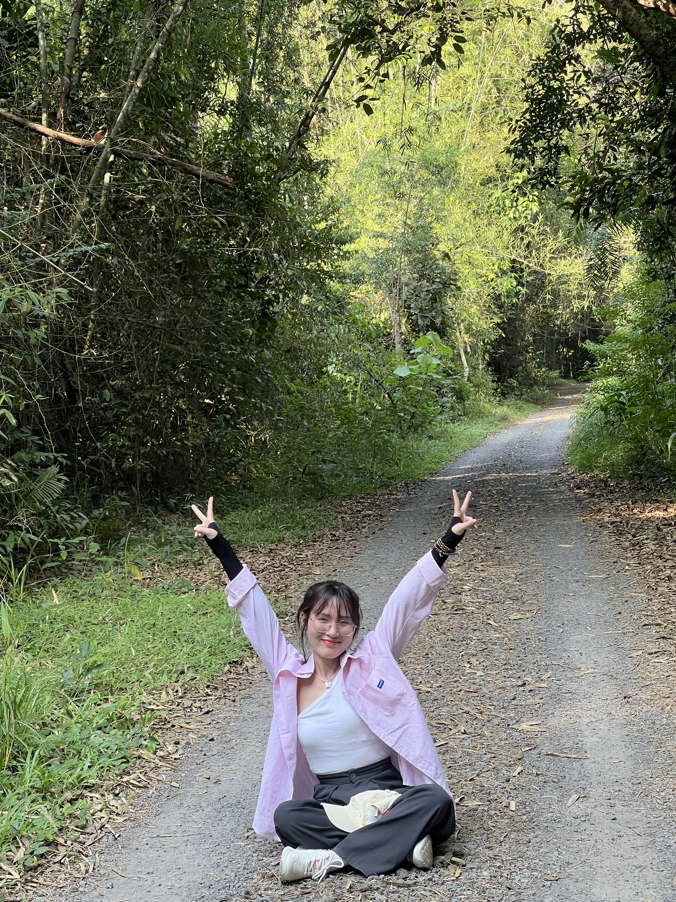

I don't design screens — I design how products work.
- Simplifying complex user flows
- Structuring information for clarity and action
- Designing for multi-role systems
- Improving conversion through UX optimization
- Building scalable design systems
About Me
With 3+ years of experience across healthcare, B2B, eCommerce, and service platforms, I specialize in multi-role systems, conversion-critical journeys, and end-to-end product design grounded in real user behavior, operational logic, and measurable outcomes.
I design complex digital products by turning user and business challenges into clear, scalable experiences.
My work sits at the intersection of user behavior, business priorities, and system logic, helping teams move from fragmented flows to product experiences that are easier to use, easier to scale, and easier to ship.

Faster design-to-development handoff through reusable patterns and standardized components.
Conversion uplift from improved IA, CTA hierarchy, and clearer funnel progression.
Drop-off reduction across booking, onboarding, and conversion-critical workflows.


Problem: Complex, fragmented booking journeys
Action: Restructured flows across app, doctor, and kiosk systems
Result: Reduced friction and improved completion clarity

Problem: Weak onboarding and unclear flow progression
Action: Improved IA, CTA hierarchy, and funnel structure
Result: ~10% conversion uplift and reduced drop-offs

Problem: Inconsistent UI and slow handoff
Action: Built reusable patterns and standardized components
Result: ~30% faster delivery and improved consistency

Problem: Fragmented experiences across user roles
Action: Designed role-aware flows across platforms
Result: More seamless cross-role interactions
Product Designer
Led end-to-end design across B2B, visa, legal, and service platforms. Improved onboarding, lead capture, and account flows with measurable UX gains in conversion and efficiency.
Product Designer
Designed a healthcare ecosystem spanning patient app, doctor app, and kiosk. Optimized booking, consultation, and management journeys using data to improve completion and reduce friction.
Product Designer
Delivered UX/UI for healthcare, eCommerce, and service platforms, including conversion-focused landing pages and end-to-end product work across industries.

Good UX removes friction and helps users move forward with confidence.
Leave your email and I'll get back to you.